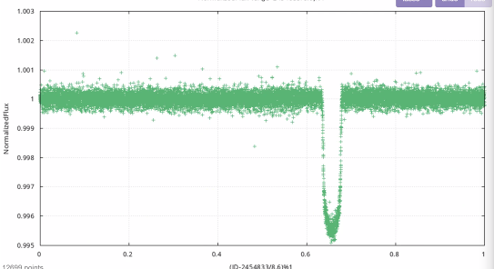
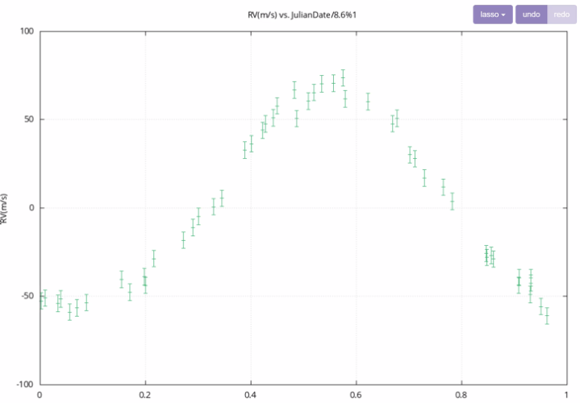
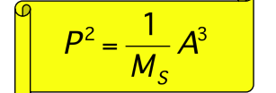
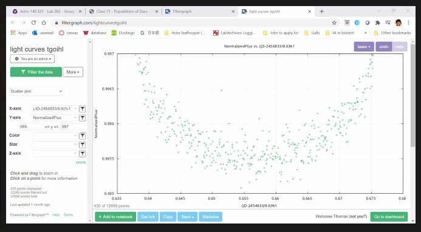

Quanitative Analysis
Period
We were given filtergraph data that represented the light curve data for our star. Using this data we intended to use the transit method and phase-phold the data to find the period of our exoplanet which represents the amount of time it takes for the exoplanet to orbit the star. To phase-phold our data we used the guess and check method. We were given this function for the x value: (JD-2454833/P)%1 with P being the period so we used estimated guessing and checking for the P value to find the transit of our exoplanet. After a whule we found when using the value 8.6 Earth Days we were able to find a clear transit.
With this information we concluded our period to be 8.6 days and we believe only one exoplanet exists within it's solar system.
Radial Velocity
After finding our period our next step was to determine the Radial Velocity which is the exoplanet's motion that is along our line of sight. In filtergraph we first changed the drop down box to Error bars. Set the x-axis to (JulianDays/8.6)/%1, the y-axis to RV(m/s) and the Y error bars to RVError(m/s) The value for the x-axis corresponds to the phase folding from determining the period. The period determined previously was 8.6 Days.
The radial velocity is the peak of the graph (which we estimate is roughly 71 m/s), but to confirm our hypothesis, we examined the parameters of the y-axis and zoomed in.

The upper bound appears to be 78.5 m/s and the lower bound appears to be 69 m/s. To determine the range, we took the upper bound and subtracted the lower bound. The value produced was divided by 2 which produced a range of uncertainty of
4.75 m/s.
78.5 m/s - 69 m/s = 9.5 m/s
9.5 m/s / 2 = 4.75 m/s
Which makes the measurement of our radial velocity: 75 +/- 5 m/s
Semimajor axis
To find the Semimajor axis of our exoplanet we used Kepler's Third Law:
We were given the star's mass to be 1.54 Ms and we know our period to be 8.6 days.
(8.6 days/365)^2=1/(1.54Ms) (x)^3
x = ((8.6/365)^2 * 1.54)^(-1/3)
x = 0.0949 AU
Mass and Eccentricity
To find the mass of our exoplanet we used the Radial Velocity simulator in NAAP labs to derive it. Since we have our raidal velocity curve
from filtergraph we matched the curve on NAAP Labs and we found that our Mass is
0.855 Jupiter Mass we found the upper bound to be 0.905 Jupiter Mass
and our lower bound to be 0.81 Jupiter Mass
and our Eccentricity is .15 with a Lower bound of 0.09 and a Upper bound of .21
Since we found the radial velocity to be 75 +/- 5 ms. We manipulated the NAAP lab simulator to fit the filter graph range to find the range of our mass and eccentricity(basing on the peak of our radial velocity curve on the simulator).

Radius
To find Radius we were given a transit simulator to work with in NAAP Labs. We started off by pulling up our data from our light curve to analyze our transit. We determined that our normalized flux level decreases during the trough of the eclipse to 0.9955 +/- .0005, and played around with our radius value (particularly by increasing it) to recreate this sort of transit within the simulator.
We determined we would like to reach an eclipse depth of between .005 and .004 (1 - the flux at the trough of the eclipse). We found that a radius of 0.92 +/- 0.05 of Jupiter's radius gave us this value.

Jupiter's radius 6.9911 * 10^9 centimeters, and our planet's radius is 0.92 +/- 0.05 times this value so we caculated it to be 6.4 * 10^9 +/- 3.60 * 10^8 cm
At this point we hypothesized that our exoplanet is still a hot Jupiter because the radius is 92 percent of Jupiter's and our mass is 85.5 percent of Jupiter's, and our exoplanet's semi-major axis is relatively small meaning the exoplanet is really close to its star.
Density
To caculate the mean denisty of our planet we have to know the Mass and volume of our exoplanet to do Mass/Volume(g/cm^3).
We know our mass to be 0.855 Jupiter masses with upper bound of 0.905 Jupiter masses and lower bound of 0.81 Jupiter masses. This will be adjusted to 0.86 +/- 0.048 Jupiter Masses
Mass in grams: 0.86 * 1.89819 * 10^30 = 1.63 *10^30 g
Radius is 0.92 +/- 0.05 Jupiter Radii in cm it is 6.4 * 10^9 +/- 3.60 * 10^8 cm
Using the sphere formula we found the volume to be 1.1068 * 10^30 cm^3
To find density we did caculated Mass/Volume to be 1.63 * 10^30 g / 1.1068 * 10^30 cm^3 = 1.47 g/cm^3
To find the range of our density we used the range of our mass:
Upper bound for density: ((.8575 + .0475) * (1898.19 * 10^27))/(1.106868 * 10^30 - 1.835332 * 10^29) = 1.86 g/cm^3
Lower bound for density: ((.8575 - .0475) * (1898.19 * 10^27))/(1.106868 * 10^30 + 1.835332 * 10^29) = 1.191516173 g/cm^3
Given that the density of the exoplanet is similar to the density of Jupiter, which is 1.33 gm/cm^3, it was predicted that the properties of the exoplanet would be similar to that of Jupiter.
Equilibrium Temperature
Given that the mass of the star is 1.54 Solar masses, the radius is 1.4 times the radius of the sun. To determine the radius of the star, we multiplied 1.4 times the radius of the sun which is 4.66 x 10^-3 AU. The radius of the star is 0. 00651 AU. The temperature of the star is 7,520 K as given by the NAAP simulator.
The albedo of Jupiter is .52 and given that the exoplanet is similar in density to Jupiter, it's albedo was chosen for the equilibrium temperature calculation.
Equilibrium Temperature Formula:

Using the equilibrium temperature equation, the surface temperature of the exoplanet is 1159 K. For reference, Jupiter's surface temperature is 165 K which could indicate that the exoplanet is a hot Jupiter. Given the surface temperature of the planet, we assume that there will be little to no water on the planet. Furthermore, given it's density, at this point we assumed that the planet composition of the exoplanet will be similar to Jupiter.

Experimenting with albedo values:
Albedo as .62: 1093.5K
Albedo as .42: 1215.4K